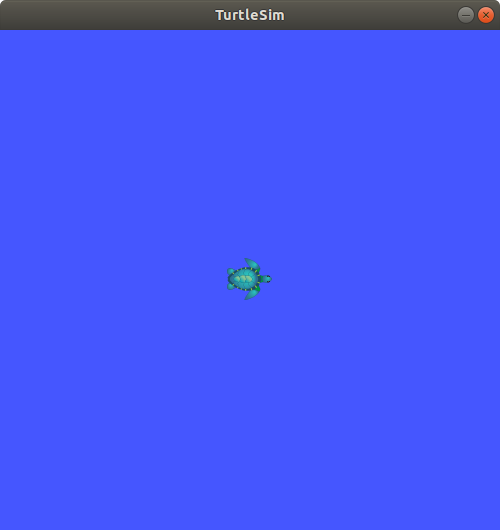
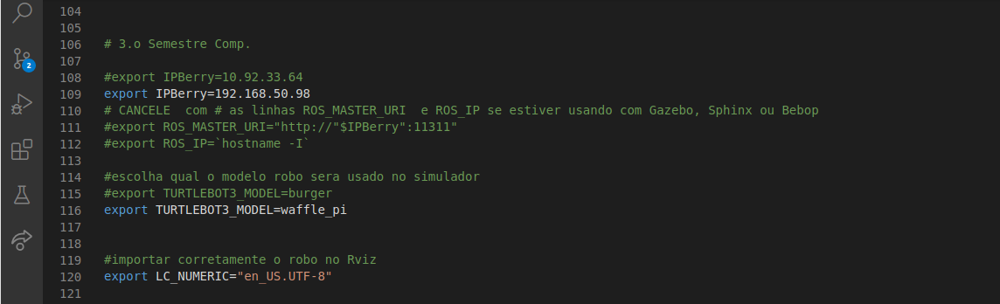
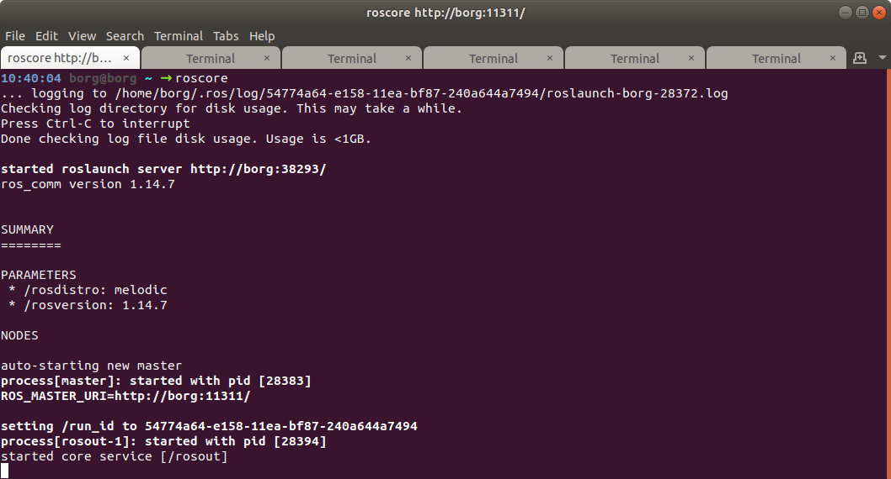
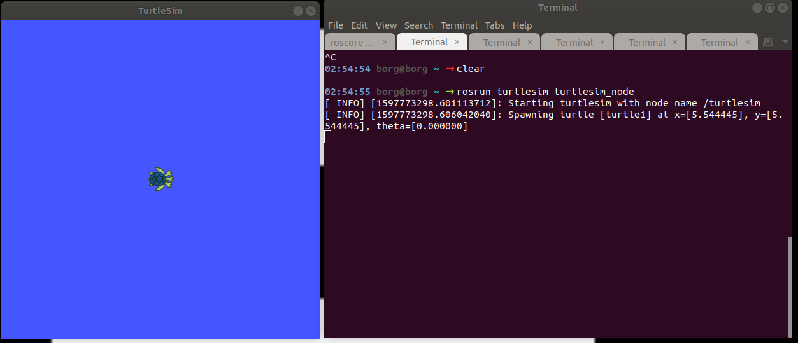
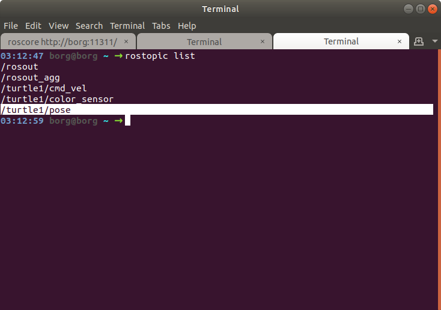
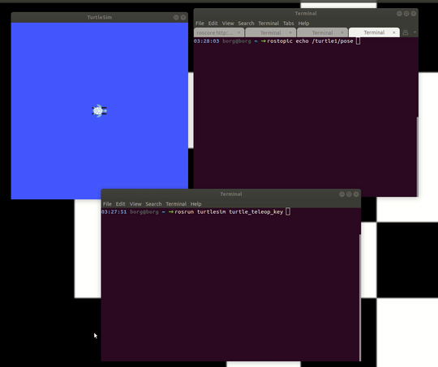
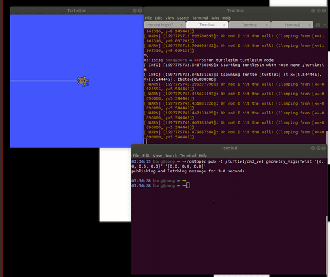

DESAFIO - Introdução ao Linux
Agora que conhecemos alguns comandos, podemos configurar o nosso .bashrc, para brincar com a tartaruga do ROS!

Configurando o ´.bashrc´
O .bashrc carrega todas as variáveis globais do seu ambiente Linux, esse arquivo é muito importante, e muito utilizado. Para acessar o bashrc, use o comando abaixo
code ~/.bashrc
Perceba que la no final do arquivo, temos algo como;
##########################
# 3s
##########################
source ~/elementos.sh
source ~/robotica.sh
Isso é porque estamos ativando esses arquivos que estão localizados na home, eles sobem configurações especificas para o ambiente, tanto da matéria de Robótica, como da matéria de Elementos de Sistemas, deixamos separado desta forma pra facilitar a manutenção e pra deixar mais organizado.
Para subir a tartaruga do ROS, precisamos configurar o nosso robotica.sh, primeiro, abra o arquivo robotica.sh, usando o comando abaixo;
code ~/robotica.sh
Depois, procure essas linhas, e comente, conforme imagem abaixo;

Salve e feche o arquivo.
Inicializando o ROS
Abra um terminal novo, usando o atalho Crtl + T, neste terminal, execute o comando a seguir para criar uma "Rede ROS"
roscore
Seu resultado deve ser algo parecido com isso:

Subindo o TurtleSim
Em uma nova aba do terminal (Crtl + Shift + T), vamos chamar a tartaruga com o comando abaixo:
rosrun turtlesim turtlesim_node
Seu resultado deve ser algo parecido com isso;

Listando os topicos disponíveis
Nós veremos com maior profundidade as funcionalidades do ROS durante o curso de Robótica Computacional, mas é legal saber, que podemos acessar os sensores dos nossos robôs, tanto dos virtuais como dos reais, com o comando abaixo;
rostopic list

Com o rostopic list temos acesso a todos os tópicos disponíveis, tanto para visualizar, como para publicar novos valores nos sensores, usaremos dois tópicos nesta atividade;
-
/turtle1/pose, para visualizar aonde nossa tartaruga está no mapa; -
/turtle1/cmd_vel, para publicar novos valores de relocidade angular e velocidade linear em nossa tartaruga;
Acessando os Sensores da tartaruga
Digite o comando abaixo em uma nova aba do seu terminal Crtl + Shift + T), para acessar os sensores de velocidade e de posição da tartaruga
rostopic echo /turtle1/pose
Depois, em um terminal novo (Crtl + T), digite o comando a seguir, use as setas do seu teclado para mover a tartaruga, e observe os valores de velocidade e de posição, alternarem no terminal aberto no passo anterior.
rosrun turtlesim turtle_teleop_key
Seu resultado deve ser algo parecido com isso;

Com o comando abaixo, podemos publicar valores de velocidade angular e linear na nossa tartaruga, só tome cuidado pra não bater ela na parede, ela reclama!
rostopic pub -1 /turtle1/cmd_vel geometry_msgs/Twist '[4.0, 0.0, 0.0]' '[0.0, 0.0, 0.0]'
Durante a disciplina de Robótica, esses comandos serão vistos em maiores detalhes, mas é importante saber, que estamos enviando um vetor contendo
- Velocidade Linear em X, Y, Z;
- Velocidade Angular em X, Y, Z;
A tartaruga aceita valores do tipo Float, positivios e negativos, altere os valores publicados, perceba como ele altera o comportamento da tartaruga

Vamos programar!
Abra o arquivo roda_tartaruga.py criado com muito carinho, na atividade anterior;
code roda_tartaruga.py
Cole o codigo abaixo dentro do seu arquivo:
#!/usr/bin/env python3
import rospy
from geometry_msgs.msg import Twist
import sys
ja_rodou=0
def move_turtle(lin_vel,ang_vel,sleep):
rospy.init_node('move_turtle', anonymous=True)
pub = rospy.Publisher('/turtle1/cmd_vel', Twist, queue_size=3)
vel = Twist()
vel.linear.x = lin_vel # Velocidade linear
vel.linear.y = 0
vel.linear.z = 0
vel.angular.x = 0
vel.angular.y = 0
vel.angular.z = ang_vel # Velocidade angular
rospy.loginfo("Linear Vel = %f: Angular Vel = %f",lin_vel,ang_vel)
pub.publish(vel)
rospy.sleep(sleep)
if __name__ == '__main__':
while not rospy.is_shutdown():
move_turtle(6.5,6.5,1.0)
Salve o arquivo, depois de permissão para que ele seja executável com o comando abaixo;
chmod a+x roda_tartaruga.py
Com o roscore aberto em um terminal:
roscore
E a sua tartaruga aberta em outro:
rosrun turtlesim turtlesim_node
Execute o seu programa roda_tartaruga.py;
./roda_tartaruga.py
ou
python3 roda_tartaruga.py
Funcionou!???
Hora do desafio!
Analise o código disponibilizado, altere os comandos e faça a nossa bela tartaruga desenhar um 8 na tela, use a sua criatividade e os seus conhecimentos em python, divirta-se!